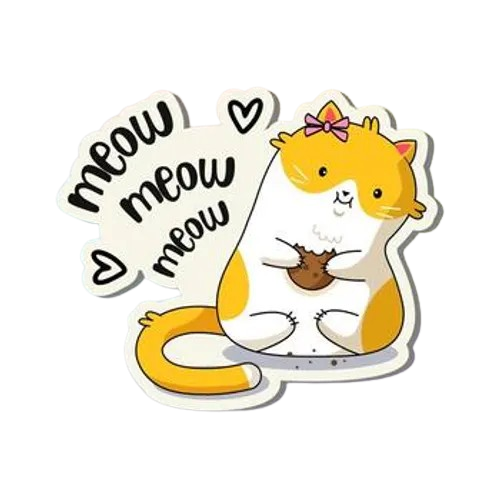
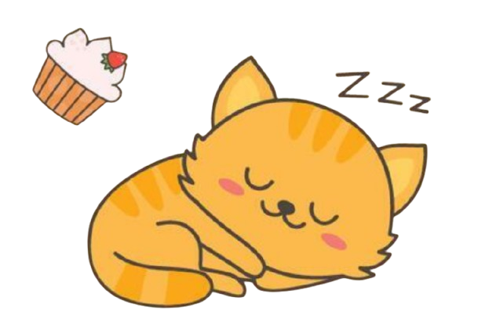
♡ ♡ ✦ ✦a little something for you
Nehaa ♡
I made this little thing just for you.
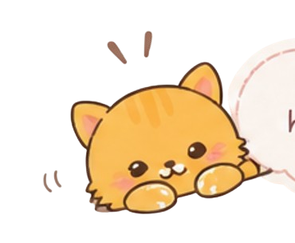


♡ ♡ ✦ ✦a little something for you
I made this little thing just for you.

okay...
I hope you know this wasn't made for just anyone.
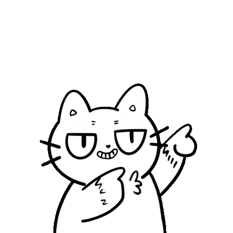
firstly, a little something, just for you...
you don't deserve just one flower...
you deserve a whole garden.
because you're worth all the little efforts.
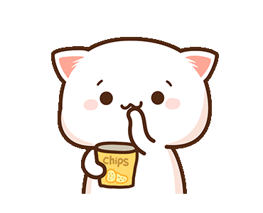
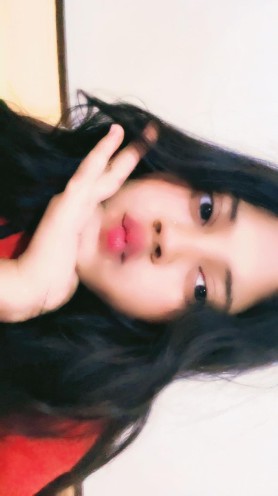
01 / 04
The cutest girl on Earth, looking absolutely breathtaking in red. ❤️ From that gorgeous red dress to those perfectly pretty red lips, everything about this look feels effortlessly beautiful. There’s just something about the way she carries herself that makes the whole picture feel brighter—like she doesn’t even have to try to stand out. ✨
a few little moments...
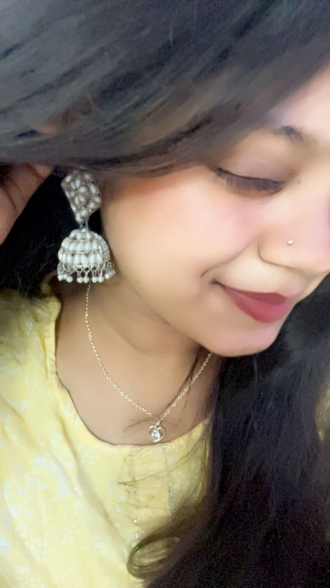
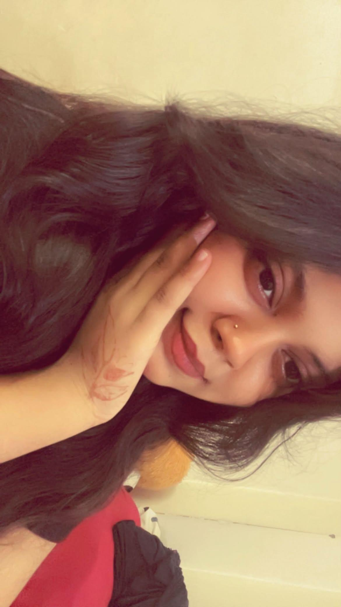
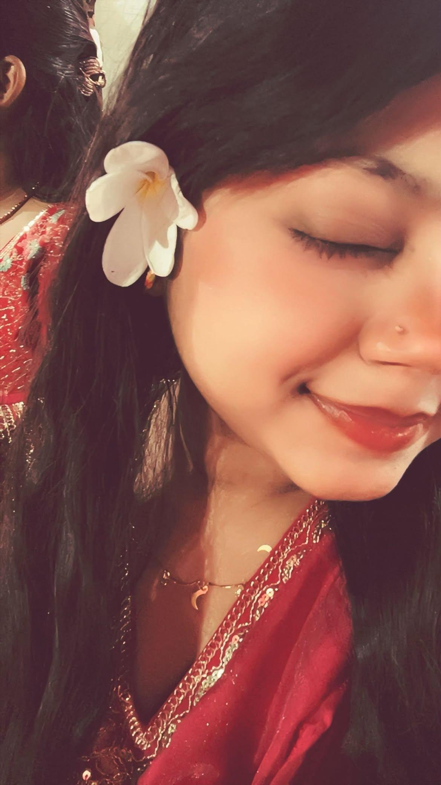
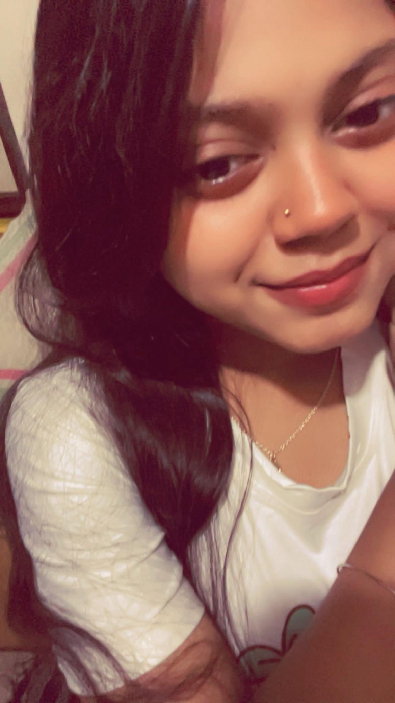
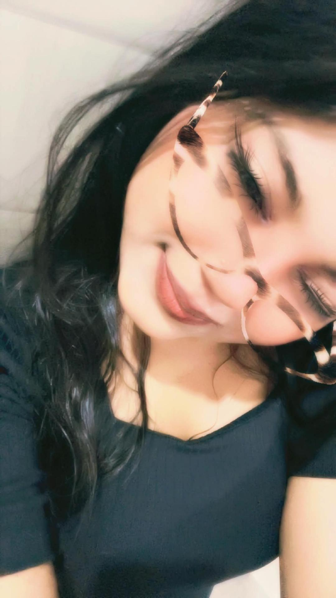
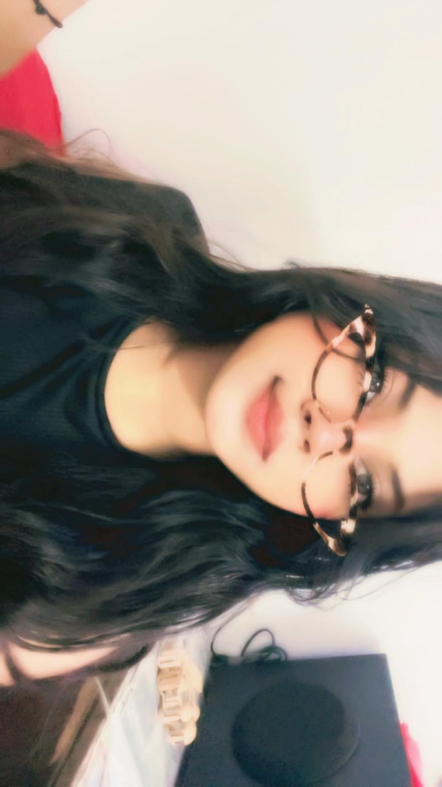
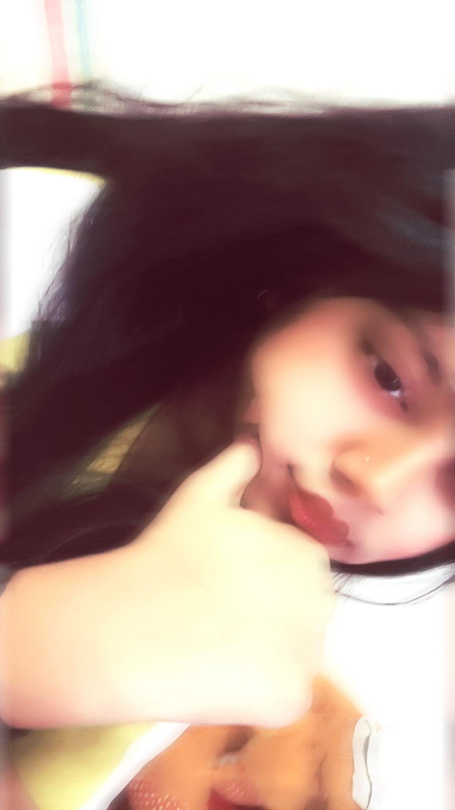
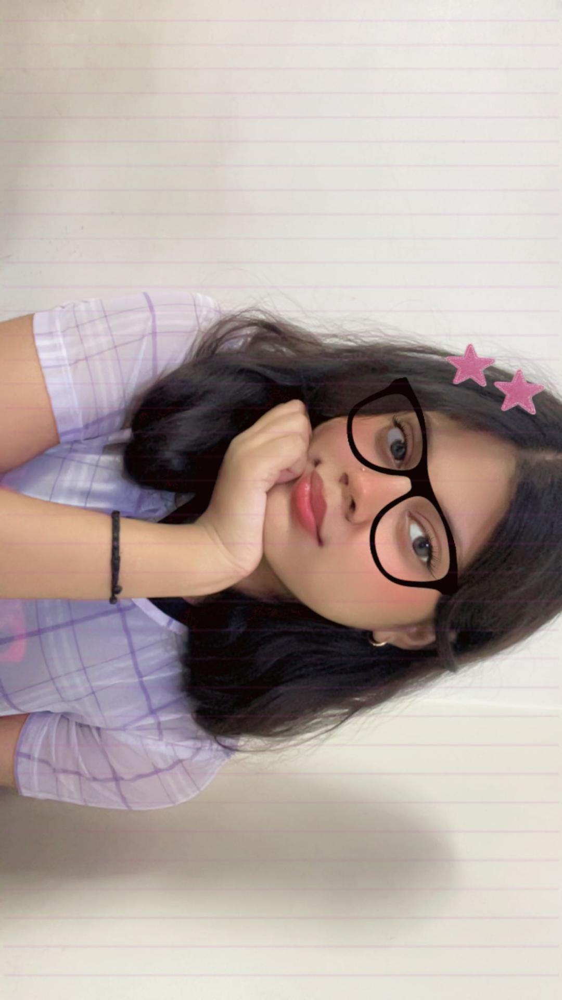
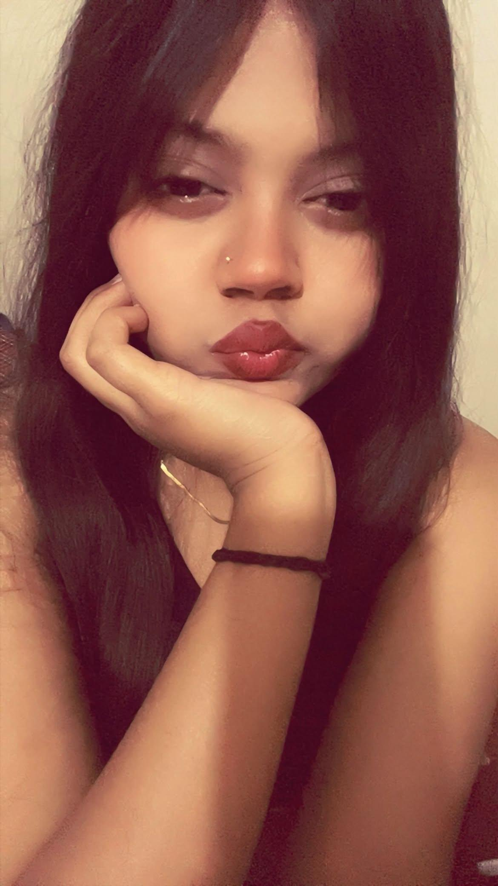
a few more little moments...
Watching these videos, I genuinely don’t know what looks cuter—the way your hair moves, those little effortless expressions, or the adorable way you carry yourself. 🤍 Your every little gesture has this effortless charm that makes it impossible not to admire you. And that glasses filter in those two videos? Somehow it makes you look even more adorable. The way your curls fall, your little adaayein, and that natural cuteness in every moment… honestly, I could watch these videos on repeat and still find something new to adore every time. ✨
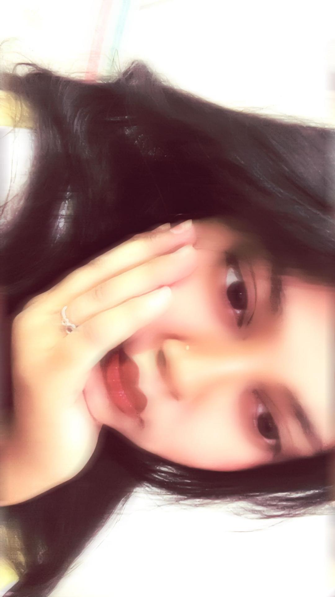
and somehow... my favourite one ♡
And somehow, we’ve reached my favourite one. ❤️ I don’t even know where to begin with this picture because every little detail about it feels so perfectly you. The ring on your hand, the way you’ve rested your hand so gently under your chin, those beautiful glossy eyes, and those soft red lips that somehow look even prettier in this picture—it all comes together in the cutest way possible. There’s something about your expression here that I genuinely love; it’s so calm, so adorable, and yet somehow impossible to look away from. Your eyes especially have this little sparkle that makes the whole picture feel alive, and I swear, I could keep looking at them for way longer than I probably should. And that little pose with your hand on your chin? Absolutely adorable. 🫶🏻
But more than anything, I think what makes this my favourite photo isn’t just how pretty you look—it’s the feeling this picture gives me. It has that effortless kind of beauty where you don’t seem to be trying to look perfect, and somehow that makes you look even more perfect to me. The glossy eyes, the red lips, the tiny details like your ring, the softness in your expression… everything feels so naturally beautiful. I could probably point out a hundred little things I like about this picture and still not be able to explain why I love it this much. Maybe it’s just one of those pictures that somehow captures your prettiness in a way that words can’t really do justice to. ❤️🩹
If I had to keep only one picture from all these moments, I think this would be the one I’d choose. Not because it’s the most perfect picture, but because somehow, it feels the most you—cute, pretty, graceful, and effortlessly adorable all at once. And honestly, I could keep admiring this one for ages without getting bored. So yeah… if you ever wonder which picture is my favourite, now you know. It’s this one. Always this one. ✨
and that's it...
I hope this little collection of moments made you smile, even if just for a while. Some things are hard to put into words, so I thought I'd put them into a little corner of the internet instead. ♡
thank you for being you. ✨
made with a lot of little efforts ♡
— Rashhh